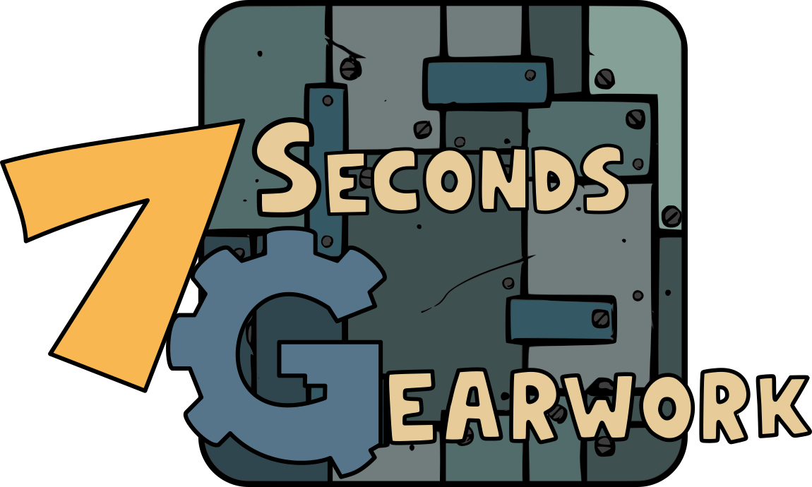
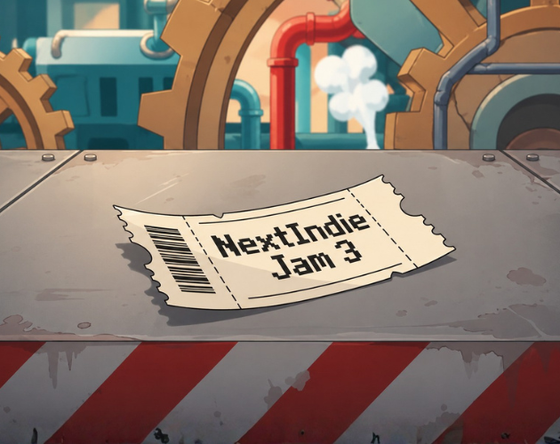
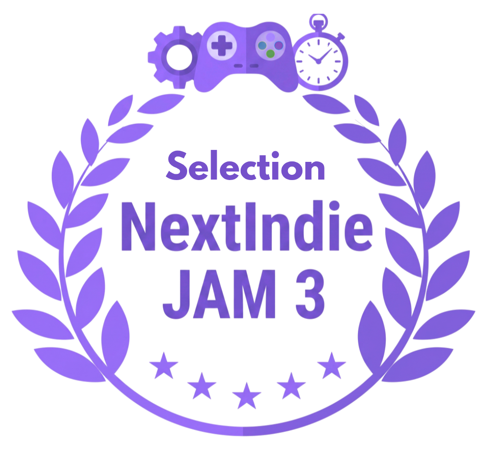

7 Seconds Gearwork é um jogo de plataforma 2D estilo Cartoon com gameplay rápida. Nele você controla uma engrenagem em uma fábrica de produção. Devido à problemas com as máquinas, por um motivo desconhecido uma máquina aleatória é danificada de 7 em 7 segundos, mas a produção não pode parar.
| Action | Control |
| Move | A / D |
| Fix Machine | E |
| Climb ladder | W / S |
| Pause | Esc |
O Desenvolvimento de 7 Seconds Gearwork foi uma experiência de bastante foco em arte e animações 2D diretamente na Godot, isto é, animadas dentro da engine com movimentação em bones.
A escolha do genêro se baseou no tema escolhido, que neste caso foi 7 segundos e Engrenagem. Fui responsável por idealizar, desenvolver, criar artes e animações 2D e publicar o jogo na Itch.io.
O jogo foi desenvolvido utilizando a linguagem de programação GDscript na Godot 4.7. Toda a arte do jogo foi criada pelo Inkscape.
O design do jogo foi inspirado principalmente em cartoons e jogos de plataforma 2D. As artes foram feitas no software Inkscape e as animações foram montadas diretamente na Godot Engine.
As mecânicas do jogo incluem mover a engrenagem, reparar máquinas danificadas a cada 7 segundos, e navegar pelos dois andares da fábrica. Entre os desafios que enfrentei durante o desenvolvimento foi a otimização e compactação do escopo do jogo dentro do cronograma de 7 dias, visto que o foco do jogo seria voktado para artes e animações.
Após o desenvolvimento de mecânicas básicas, fiz uma revisão de escopo de acordo com o tempo restante e meus pontos de foco. Por grande parte do jogo ter sido feita por mim, tive que me adaptar a decisões rápidas por conta do tempo limitado que tinha de desenvolvimento.
O jogo foi finalizado completamente sem bugs aparentes até então e enviado à game jam. Foi uma ótima experiência para mim na parte artística e na produção de animações, mas claro que como desenvolvedor, cada novo jogo é uma nova experiência completa de aprendizado. Além de tudo, fizemos parte do top 10 e entramos para a NextIndie Selection.

